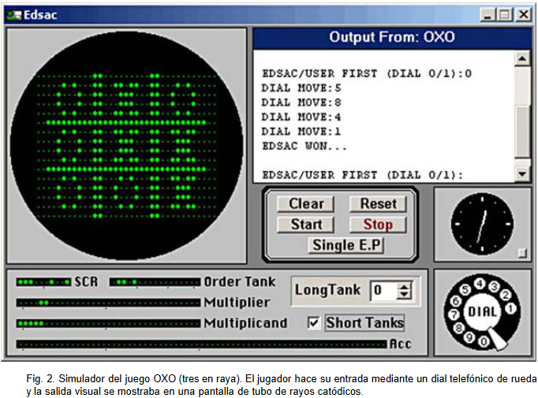
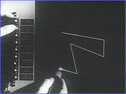
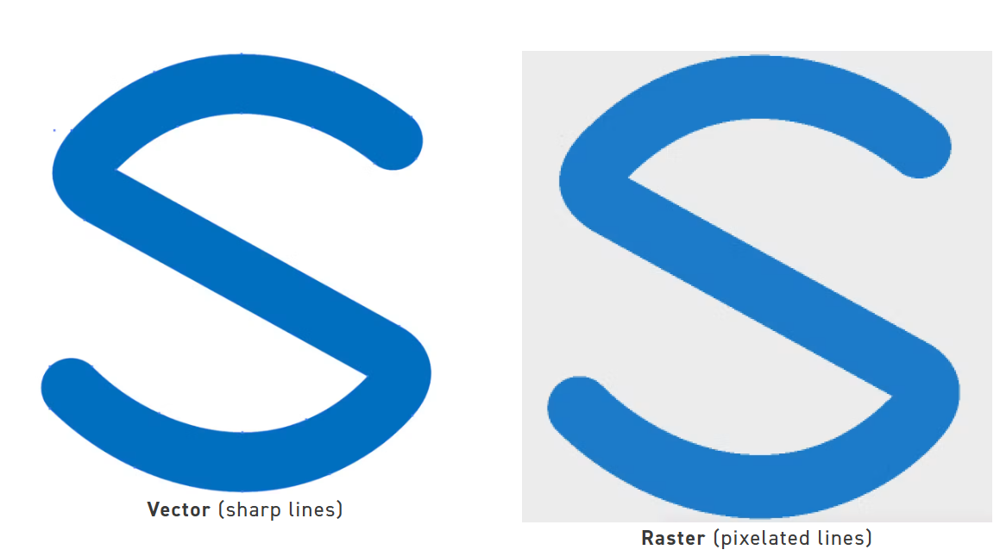
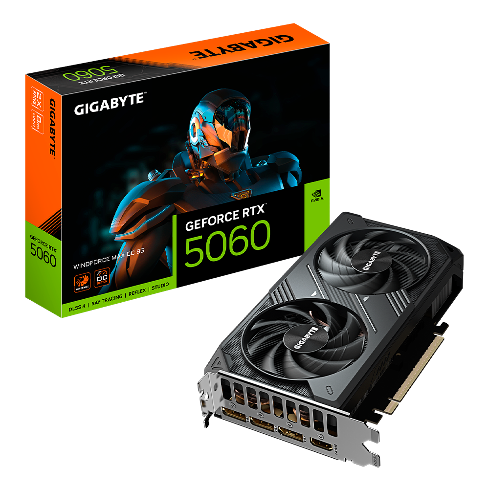
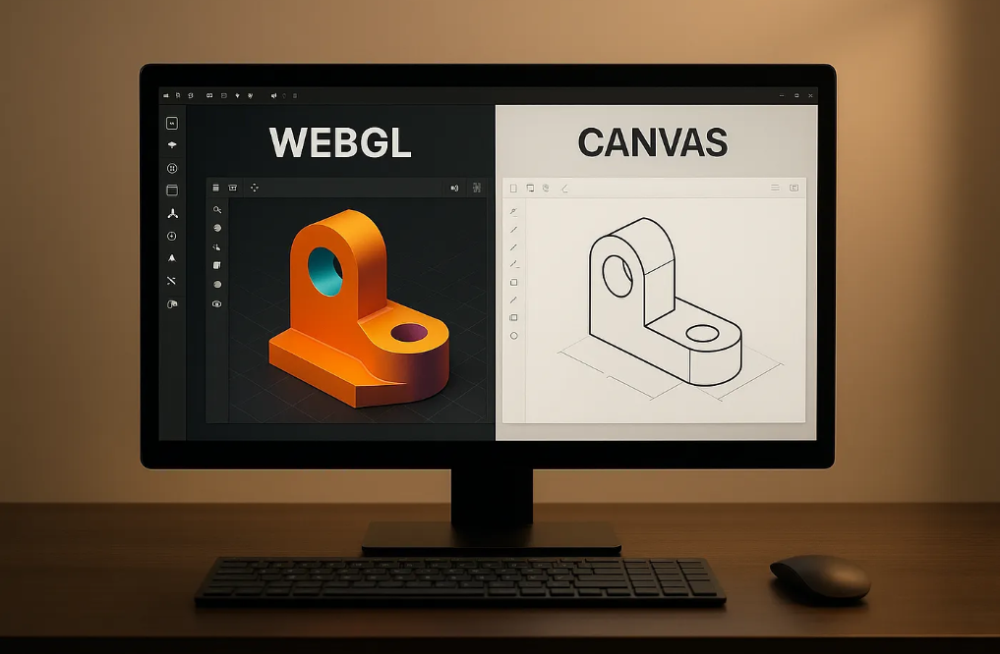

Cinco momentos de la evolución
PRIMEROS SISTEMAS: La imagen como salida
Limitación anterior: Era difícil reconocer las formas continuas, trayectorias, contornos o figuras geométricas complejas, ya que la información se limitaba a datos puramente numéricos y texto en tarjetas perforadas o listados estáticos.
Cambio: Investigué la pantalla CRT. Este dispositivo mostraba construcciones de líneas y curvas mediante un haz de electrones que marcaba el punto de origen y destino de cada trazo. Permitía visualizar segmentos y formas de manera estática o en movimiento.
Impacto: Ayudó a reconocer la localización de objetos en tiempo real y la construcción de siluetas o gráficos figurativos.
Ejemplo actual: Los monitores y pantallas de computadoras actuales, los cuales traducen datos en tiempo real para mostrar interfaces de usuario, tableros con gráficas en vivo o modelos 3D.

Foto: revistas.uma.es
1963: Sketchpad: dibujos geométricos interactivos
Limitación anterior: Al trabajar con un dibujo completo, era difícil modificar partes individuales sin reestructurar manualmente el código o volver a trazar toda la imagen desde cero.
Cambio: Reunió funciones para reconocer restricciones geométricas, manejar estructuras de datos jerárquicas y permitir la edición directa en pantalla mediante un lápiz óptico.
Impacto: Permitió crear, modificar y manipular objetos vectoriales de manera interactiva y directa sobre la pantalla en tiempo real. Sentó las bases de los programas de diseño asistido por computadora (CAD), las interfaces gráficas de usuario y la programación orientada a objetos.
Ejemplo actual: Un ejemplo de la actualidad AutoCAD, Figma, GeoGebra o cualquier software moderno de diseño asistido por computadora (CAD) y dibujo vectorial.

Foto: Nova online
Se popularizan en la computación personal: Imágenes rasterizadas
Limitación anterior: En una fotografía, sería difícil retocar variaciones sutiles de color, texturas complejas, sombras o detalles continuos, ya que un sistema vectorial solo define contornos e instrucciones geométricas simples.
Cambio: Para cada píxel, la imagen guarda su valor de color individual y su posición exacta dentro de una retícula o matriz bidimensional.
Impacto: Permitió calcular el brillo y el comportamiento de la luz sobre superficies curvas, logrando imágenes tridimensionales con apariencia suave y realista.
Ejemplo actual: Actualmente una aplicación que permite cambiar píxeles o una zona de la imagen es Adobe Photoshop.

Foto: Smartpress.
Hardware Especializado: Gráficos en tiempo real
Limitación anterior: Un retraso dificultaba la precisión y el tiempo de reacción de la persona, provocando desorientación o una experiencia poco fluida en simuladores y videojuegos.
Cambio: La GPU realiza miles de cálculos matemáticos y geométricos en paralelo para procesar e iluminar fotogramas de forma simultánea.
Impacto: Liberó de carga a la CPU y permitió procesar polígonos, texturas y efectos de iluminación a velocidades fluidas en computadoras personales.
Ejemplo actual: Un ejemplo actual son los videojuegos 3D, por ejemplo: Fornite.

Foto: DDTECH Componentes y Tecnología.
Canvas desde 2004 · WebGL desde 2011: Gráficos en el navegador
Limitación anterior: Las páginas web solo podían mostrar texto e imágenes estáticas; para ver gráficos 3D o animaciones complejas se requería instalar complementos externos como Flash o Java Applets.
Cambio: Canvas opera mediante renderizado en CPU y APIs sencillas de JavaScript, mientras que WebGL aprovecha la GPU mediante shaders GLSL para procesar objetos 2D y modelos 3D acelerados por hardware directamente en el navegador sin complementos.
Impacto: Hizo posible ejecutar videojuegos en 3D, mapas interactivos y simulaciones complejas dentro de cualquier navegador sin necesidad de instalar programas adicionales.
Ejemplo actual: Herramientas web en 3D como Google Earth Web, plataformas como Sketchfab o navegadores interactivos en tiempo real.

Foto: AlterSquare.medium.
Laboratorio de color
Experimento 1: Cuando desaparece el tono
Predicción: Espero que cuando los tres canales (R, G, B) sean iguales, el valor máximo y mínimo coincidan, por lo que el delta será igual a cero. Al no haber diferencia de color, la saturación será 0%.
Datos: Negro (0, 0, 0): Máximo = 0, Mínimo = 0, Delta = 0, HSV = (0°, 0%, 0%); Blanco (255, 255, 255): Máximo = 255, Mínimo = 255, Delta = 0, HSV = (0°, 0%, 100%); Gris (128, 128, 128): Máximo = 128, Mínimo = 128, Delta = 0, HSV = (0°, 0%, 50%)
Conclusión basada en valores: En los tres casos se cumple que R, G y B son iguales, lo cual genera un delta de 0. Como no hay un canal dominante, la saturación es de 0%. La única variable que cambia es el valor (V).
Experimento 2: Mismo sector, distinta intensidad
Predicción: Al mantener R como máximo, intuyo que este será el color predominante, solo cambiará la saturación y el valor (brillo) en HSV.
Datos: Rojo medio (128, 0, 0): Máx = 128, Mín = 0, Delta = 128, HSV = (0°, 100%, 50.2%), HSL = (0°, 100%, 25.1%); Rojo opaco (128, 64, 64): Máx = 128, Mín = 64, Delta = 64, HSV = (0°, 50%, 50.2%), HSL = (0°, 33.3%, 37.6%)
Conclusión basada en valores: En ambos casos el tono se mantuvo en 0° porque el canal R continuó siendo el máximo (128). El valor (V) de HSV permaneció en 50.2% dado que el máximo no cambió. Sin embargo, al subir G y B de 0 a 64, el valor mínimo aumentó, lo que redujo el delta a la mitad, lo que ocasionó que la saturación en HSV cayera del 100% al 50%.
Experimento 3: Un color intermedio
Predicción: El canal mayor será el Azul (B = 192) y el menor será el Rojo (R = 64). V y L serán por supuesto distintos.
Datos: RGB: (64, 128, 192), Máximo: 192 (Canal B), Mínimo: 64 (Canal R), Delta: 128, HSV: (210°, 66.7%, 75.3%) y HSL: (210°, 50%, 50.2%)
Conclusión basada en valores: V y L difieren porque miden la luz de forma distinta usando el máximo (192) y el mínimo (64). Mientras que V toma directamente el valor del canal dominante (192 ÷ 255 = 75.3%), L promedia ambos límites ((192 + 64) ÷ 2 = 128), lo que resulta en un brillo menor (128 ÷ 255 = 50.2%).
De la fórmula al algoritmo
La función recibe los valores enteros R, G y B (de 0 a 255) y debe devolver los valores de H (0 a 360), S (0 a 100) y V (0 a 100).
Normalización: Los colores en pantalla (RGB) vienen en una escala entera de 0 a 255. Lo primero que se hace es dividirlos entre 255: r = R / 255, g = G / 255, b = B / 255.
Máximo (max): Es el valor numérico más alto entre los tres canales ya normalizados: max = Máximo(red, green, blue). Representa directamente el Valor (V) o brillo del color. Si max es 1, el color está al máximo de brillo; si max es 0, el color es negro absoluto.
Mínimo (min): Es el valor numérico más bajo entre los tres canales normalizados: min = Mínimo(red, green, blue). Ayuda a determinar cuánta "pureza" o tinte tiene el color al compararlo con el valor máximo.
Delta: Es la diferencia matemática entre el canal más fuerte y el más débil: Delta = max - min. Sirve para calcular la Saturación (S): (Delta ÷ max) × 100. Además sirve como divisor para obtener el Tono (H). Si el Delta es grande, el color es muy vívido/puro. Si es muy pequeño o cero, el color está muy deslavado o es un tono neutro.
Caso Acromático: Ocurre cuando Delta = 0, lo que significa que el valor máximo y el mínimo son exactamente iguales (red = green = blue). Significa que no hay ningún color primario que domine sobre otro (es un blanco, un negro o cualquier tono de gris).
// Cálculo de h en grados, s y v en porcentajes.
let h = 0;
let s = 0;
const v = max * 100; // Valor v en porcentaje (0-100)
// Calcular Saturación (S)
if (max !== 0) {
s = (delta / max) * 100;
} else {
s = 0;
}
// 4. Calcular Tono (H)
if (delta === 0) { // caso acromático
h = 0; // evitar un error técnico de división entre cero
} else {
if (max === red) {
h = ((green - blue) / delta) % 6;
} else if (max === green) {
h = (blue - red) / delta + 2;
} else {
h = (red - green) / delta + 4;
}
h = h * 60; // Convertir a grados (0 - 360)
if (h < 0) {
h += 360; // Ajustar ángulos negativos
}
}
return [h, s, v];